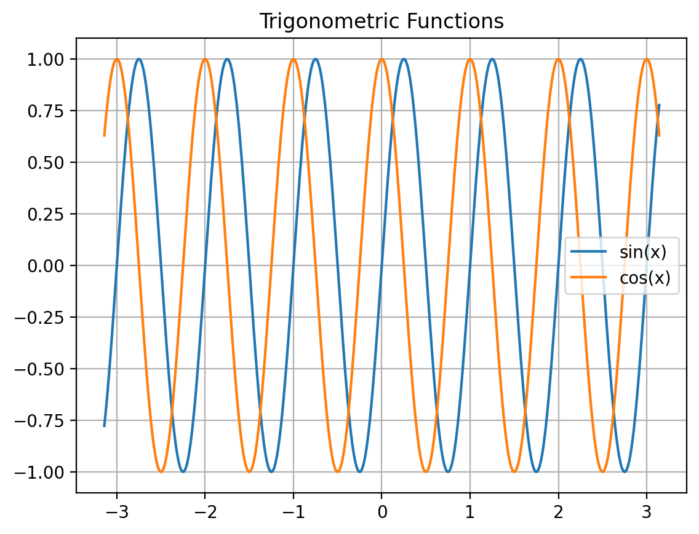

import ipywidgets
print(ipywidgets.__version__)8.1.5names = [
'Aarav', 'Aditi', 'Arjun', 'Ananya', 'Dhruv', 'Diya',
'Ishaan', 'Isha', 'Krishna', 'Kavya', 'Mira', 'Mihir',
'Neha', 'Nikhil', 'Priya', 'Pranav', 'Riya', 'Rohan'
]
df = pd.DataFrame({
'Name': names,
'Age': np.random.randint(18, 23, len(names)),
'Grade': np.random.randint(65, 100, len(names)),
'Subject': np.random.choice(['Math', 'Physics', 'Chemistry'], len(names))
})| Name | Age | Grade | Subject | |
|---|---|---|---|---|
| 0 | Aarav | 20 | 69 | Chemistry |
| 1 | Aditi | 21 | 68 | Physics |
| 2 | Arjun | 19 | 72 | Physics |
| 3 | Ananya | 21 | 65 | Chemistry |
| 4 | Dhruv | 20 | 75 | Physics |
| 5 | Diya | 21 | 88 | Physics |
| 6 | Ishaan | 22 | 84 | Math |
| 7 | Isha | 18 | 99 | Math |
| 8 | Krishna | 19 | 77 | Chemistry |
| 9 | Kavya | 21 | 87 | Physics |
| 10 | Mira | 21 | 69 | Chemistry |
| 11 | Mihir | 19 | 77 | Chemistry |
| 12 | Neha | 18 | 66 | Math |
| 13 | Nikhil | 18 | 78 | Physics |
| 14 | Priya | 22 | 89 | Physics |
| 15 | Pranav | 20 | 99 | Math |
| 16 | Riya | 18 | 84 | Math |
| 17 | Rohan | 21 | 65 | Physics |
print("\nBasic Subsetting Examples:")
print("\nMath Students:")
math_students = df.query('Subject == "Math"')
math_students
Basic Subsetting Examples:
Math Students:| Name | Age | Grade | Subject | |
|---|---|---|---|---|
| 6 | Ishaan | 22 | 84 | Math |
| 7 | Isha | 18 | 99 | Math |
| 12 | Neha | 18 | 66 | Math |
| 15 | Pranav | 20 | 99 | Math |
| 16 | Riya | 18 | 84 | Math |
print("\nHigh Performers (Grade > 85):")
high_performers = df.query("Grade > 85")
display(high_performers)
High Performers (Grade > 85):| Name | Age | Grade | Subject | |
|---|---|---|---|---|
| 5 | Diya | 21 | 88 | Physics |
| 7 | Isha | 18 | 99 | Math |
| 9 | Kavya | 21 | 87 | Physics |
| 14 | Priya | 22 | 89 | Physics |
| 15 | Pranav | 20 | 99 | Math |
@interact
def filter_by_subject(subject=['All'] + list(df['Subject'].unique())):
print(f"Showing {subject} students")
"""Simple filtering using @interact"""
if subject == 'All':
return df
return df.query('Subject == @subject')Showing All students with grade >= 0.0| Name | Age | Grade | Subject | |
|---|---|---|---|---|
| 0 | Aarav | 20 | 69 | Chemistry |
| 1 | Aditi | 21 | 68 | Physics |
| 2 | Arjun | 19 | 72 | Physics |
| 3 | Ananya | 21 | 65 | Chemistry |
| 4 | Dhruv | 20 | 75 | Physics |
| 5 | Diya | 21 | 88 | Physics |
| 6 | Ishaan | 22 | 84 | Math |
| 7 | Isha | 18 | 99 | Math |
| 8 | Krishna | 19 | 77 | Chemistry |
| 9 | Kavya | 21 | 87 | Physics |
| 10 | Mira | 21 | 69 | Chemistry |
| 11 | Mihir | 19 | 77 | Chemistry |
| 12 | Neha | 18 | 66 | Math |
| 13 | Nikhil | 18 | 78 | Physics |
| 14 | Priya | 22 | 89 | Physics |
| 15 | Pranav | 20 | 99 | Math |
| 16 | Riya | 18 | 84 | Math |
| 17 | Rohan | 21 | 65 | Physics |
student_filter_viz = interact(
filter_students,
subject = ['All'] + list(df['Subject'].unique()),
min_grade=(0.0, 99.5, 5.0)
)def plot_wave(freq=1):
"""Basic plotting function"""
x = np.linspace(-1*np.pi, 1*np.pi, 500)
plt.plot(x, np.sin(np.pi*2*freq*x), label='sin(x)')
plt.plot(x, np.cos(np.pi*2*freq*x), label='cos(x)')
plt.grid(True)
plt.legend()
plt.title('Trigonometric Functions')
plt.show()
print("\nBasic Plot (Direct Function Call):")
plot_wave()
Basic Plot (Direct Function Call):
print("\nPlotting with @interact:")
@interact
def plot_wave_interact(freq=(1, 5, 1)):
"""Simple interactive plotting with @interact"""
plot_wave(freq)
Plotting with @interact:def plot_wave_advanced(func_type='sine', frequency=1, color='blue', show_grid=True):
"""Advanced plotting with more control"""
fig, ax = plt.subplots(figsize=(6, 4))
num_points = 1000
x = np.linspace(-2 * np.pi, 2 * np.pi, num_points)
if func_type == 'sine':
y = np.sin(2 * np.pi * frequency * x)
title = 'Sine Wave'
elif func_type == 'cosine':
y = np.cos(2 * np.pi * frequency * x)
title = 'Cosine Wave'
plt.plot(x, y, color=color, label=func_type)
plt.title(title)
plt.legend()
plt.grid(show_grid)
plt.show()
# Create the interact widget and store it in plot_viz
plot_viz = interact(
plot_wave_advanced,
func_type=widgets.RadioButtons(
options=['sine', 'cosine'],
description='Function:',
style={'description_width': 'initial'},
layout={'width': '200px'}
),
frequency=widgets.FloatSlider(
value=1,
min=0.1,
max=5,
step=0.1,
description='Frequency:',
style={'description_width': 'initial'},
layout={'width': '300px'}
),
color=widgets.Dropdown(
options=['blue', 'red', 'green', 'purple'],
value='blue',
description='Color:',
style={'description_width': 'initial'},
layout={'width': '200px'}
),
show_grid=widgets.Checkbox(
value=True,
description='Show Grid',
style={'description_width': 'initial'}
)
)